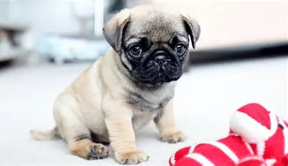
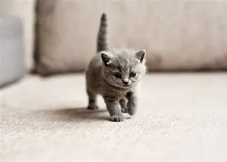

Puppy: Tiene 2 meses y busca una familia

Luna: Tambien tiene 2 meses y busca una familia
Si tenes pensado adoptar gatos y perros que estan buscando un hogar, en este sitio web vas a encontrar a ese perro o gato que tambien te esta buscando. Dale un hogar a quien mas lo necesita. Buscamos proteger la vida de perros y gatos en estado de maltrato y abandono. Les brindamos alimentos, medicamentos y albergue, con el fin de mejorar su calidad de vida y conseguirles un hogar.
Puppy: Tiene 2 meses y busca una familia
Luna: Tambien tiene 2 meses y busca una familia